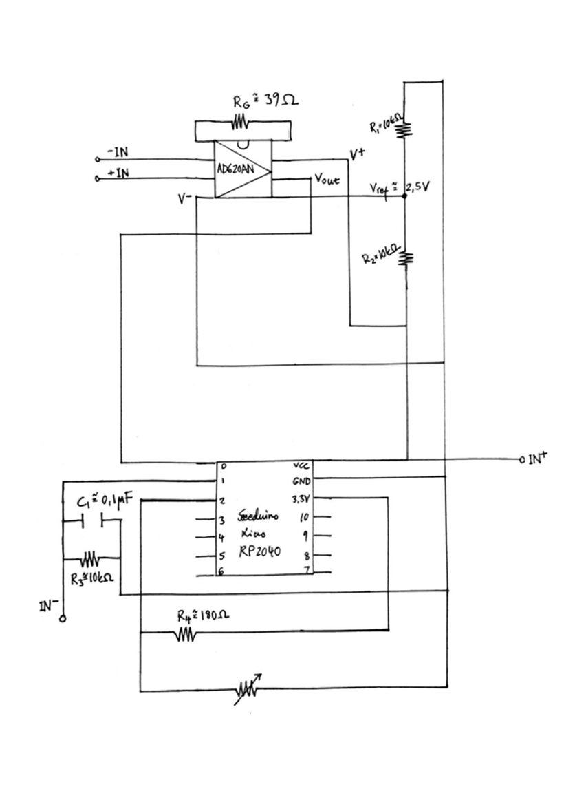
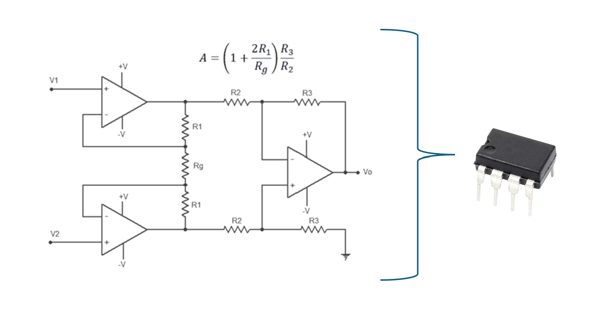
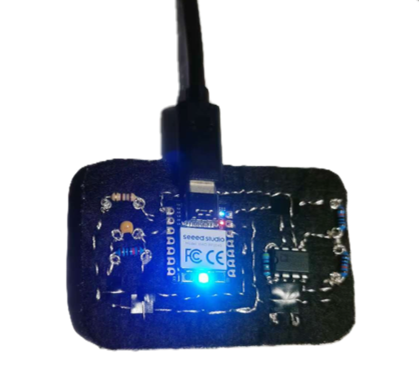
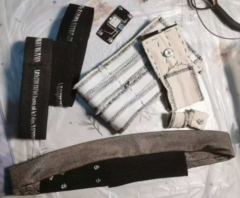

Textile-Based Physiological Sensing
Accurate physiological measurement requires appropriate placement of each sensor to ensure signal quality, comfort, and minimal interference with gameplay. Our respiration is measured using an elastic respiration belt placed around the lower ribs. This position allows the belt to detect chest expansion and contraction during inhalation and exhalation. The lower-rib placement provides a good balance between signal sensitivity and user comfort. This design enables the sensor to capture both shallow and deep breathing patterns without restricting movement. The belt is designed to fit snugly, but not too tightly, ensuring accurate respiration tracking while remaining comfortable throughout the interactive experience. Our GSR is measured using two electrodes placed on the index and middle fingers. This placement provides high-quality electrodermal signals because the fingers contain a high density of eccrine sweat glands \cite{dawson2007}. Our sEMG is measured using three surface electrodes placed on the arm. The electrodes are aligned parallel to the muscle fibers and spaced according to standard EMG guidelines to reduce crosstalk and improve signal quality.

The circuit design integrates sensing channels for sEMG, respiration, and GSR into a single data acquisition system. Because sEMG produces microvolt-level signals, the sEMG channel includes a dedicated analog front end consisting of a differential instrumentation amplifier based on the AD620AN, a widely used amplifier for biosignal acquisition. An instrumentation amplifier is a precision differential amplifier specifically designed for low-level signal acquisition in noisy environments. In addition to the amplification stage, we applied low-pass filtering and signal smoothing to reduce noise. On the software side, a lightweight first-order exponential filter is used:
$$ x_{new} = (1-\lambda)x_{old} + \lambda x $$where \(x\) is the incoming raw sample, \(x_{new}\) is the filtered output, \(x_{old}\) is the previous filtered value, and \(\lambda\) is the smoothing factor. This formulation corresponds to a first-order RC low-pass filter:
$$ \lambda = \frac{dt}{RC+dt} $$where \(dt\) is the sampling interval. The approximate cut-off frequency of the digital filter is given by:
$$ f_c \approx \frac{\lambda}{2\pi dt (1-\lambda)} $$
After completing the circuit design, we constructed our first hardware prototype using e-textile materials to create a flexible and wearable system. During the development process, we decided to divide the hardware into four separate modules to improve compatibility and usability across the three sensing modalities. This decision was motivated by the fact that our prototype supports two independent games, each requiring a different combination of sensors. User testing also indicated that the system would be more convenient if users only needed to wear the components required for the selected game.


In our updated final prototype, the mainboard is connected to the sensors using conductive metal snap buttons, allowing the modules to be easily attached and detached. The sEMG sensors are integrated into fabric strips secured to the arm with hook-and-loop fasteners. The GSR sensors are designed as small textile finger rings, and the respiration sensor is an adjustable belt worn around the torso.